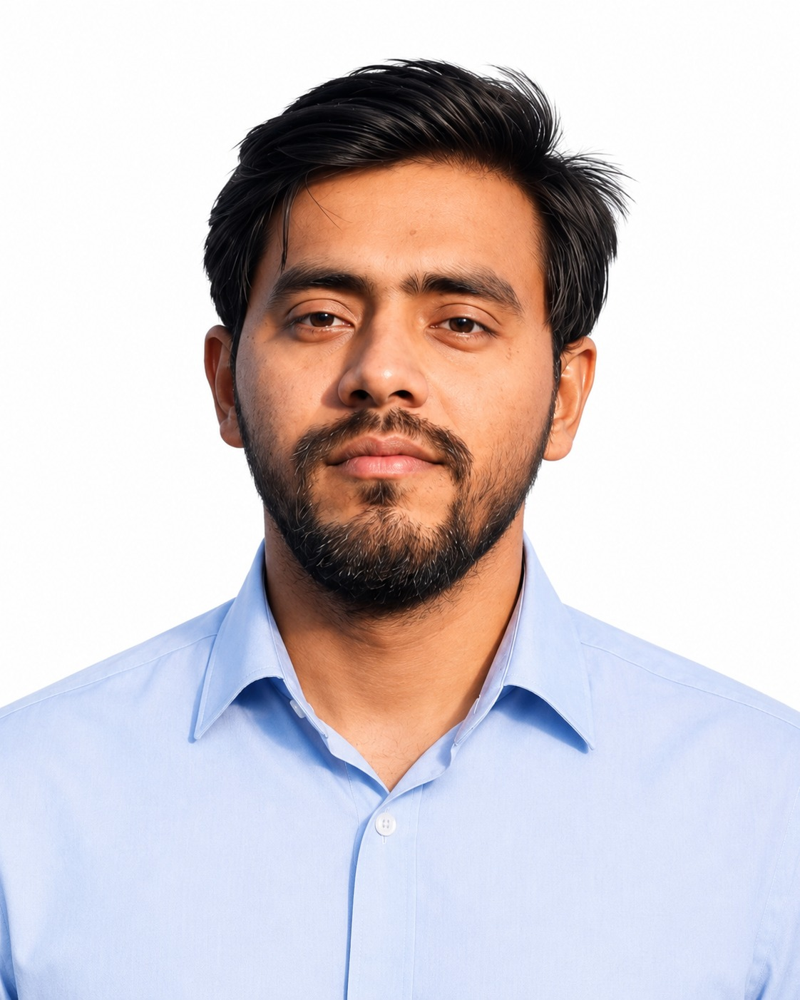

Oct 2026 – Present
PhD Research Scholar
Subseasonal Forecasting · Computational Hydrological Modelling
Current research direction focused on prediction and modelling of hydroclimatic processes.
Chaitanya Raj is a climate and hydroclimate researcher working at the intersection of climate extremes, subseasonal forecasting, and computational hydrological modelling. My work combines climate data, statistical methods, and geospatial analysis to better understand high-impact environmental events and improve the evidence available for climate-risk research.

Climate science that connects rigorous analysis with the challenges of a warming and increasingly variable environment.
I am a researcher in Earth and Environmental Sciences, with an academic background in climate science, hydrology, and geospatial analysis. I completed an Integrated BS–MS degree at the Indian Institute of Science Education and Research (IISER) Bhopal, where my master's research focused on compound dry and hot extremes in Madhya Pradesh.
My research has since expanded toward multi-hazard climate extremes across India and the prediction of pre-monsoon heatwaves at subseasonal timescales. I am particularly interested in how observational datasets, reanalysis products, climate indices, and numerical models can be used together to characterize events, evaluate forecast skill, and support better understanding of hydroclimatic risk.
Alongside climate analysis, I have worked on satellite-based coastal mapping and bathymetry, and I use programming and geospatial tools to develop reproducible research workflows.
My work brings together climate diagnostics, prediction, and spatial analysis to investigate environmental extremes across scales.
Characterizing droughts, heatwaves, extreme precipitation, and compound dry–hot events through frequency, duration, intensity, spatial extent, and changing behaviour.
Investigating forecast skill and predictability of pre-monsoon heatwaves and other high-impact weather events, including the role of large-scale climate drivers.
Applying computational hydrological models and climate information to understand streamflow variability, water stress, and hydroclimatic processes.
Using satellite imagery and spatial methods to study coastal change, shoreline dynamics, and satellite-derived bathymetry.
Selected research roles and academic training. This timeline can be expanded as new projects and appointments are added.
Current research direction focused on prediction and modelling of hydroclimatic processes.
Seasonal to subseasonal forecasting of pre-monsoon heatwaves over India. Supervisor: Dr. R. Maheswaran.
Multi-hazard analysis of droughts, heatwaves, extreme precipitation, and streamflow using statistical indices and hydrological modelling. Supervisor: Dr. Saran Aadhar.
Modelling and evaluating compound dry and hot event vulnerabilities in Madhya Pradesh. The work was featured in The Times of India and Ground Report. Supervisor: Dr. Somil Swarnkar.
Geospatial mapping of satellite-derived shoreline trends and long-term variability along the Gujarat coast. Supervisor: Dr. Vikrant Jain.
Satellite-derived bathymetry using Sentinel-2 and Landsat 8 over the Rameshwaram coast, Tamil Nadu. Supervisor: Dr. Komal Rani.
Integrated undergraduate and master's training in Earth and environmental sciences.
Peer-reviewed work, ongoing manuscripts, and research contributions. Add further papers, DOI links, and preprints as your publication list grows.
Raj, C., Swarnkar, S., Poonia, V. et al. · Theoretical and Applied Climatology, 156, 333 (2025).
Raj, C., Sahu, V., Swarnkar, S., Poonia, V. et al. · In Blue Sky, Blue Water, Taylor & Francis.
Sahu, V., Raj, C., Swarnkar, S. et al. · Regional Environmental Change, 26, 227 (2026). Published 29 October 2026.
Raj, C., Swarnkar, S., Poonia, V. · Listed as under review in the supplied CV.
Under review · Update status when appropriateConference abstract based on satellite-derived bathymetry research.
Tools and methods used across climate, hydrological, and geospatial research.
Python · R · MATLAB · Google Earth Engine · LaTeX
QGIS · ArcGIS · ENVI · SNAP · DSAS · Geosoft
SWAT · VIC · LSTM · Random Forest · KNN
For research discussions, collaborations, or academic opportunities, feel free to get in touch.